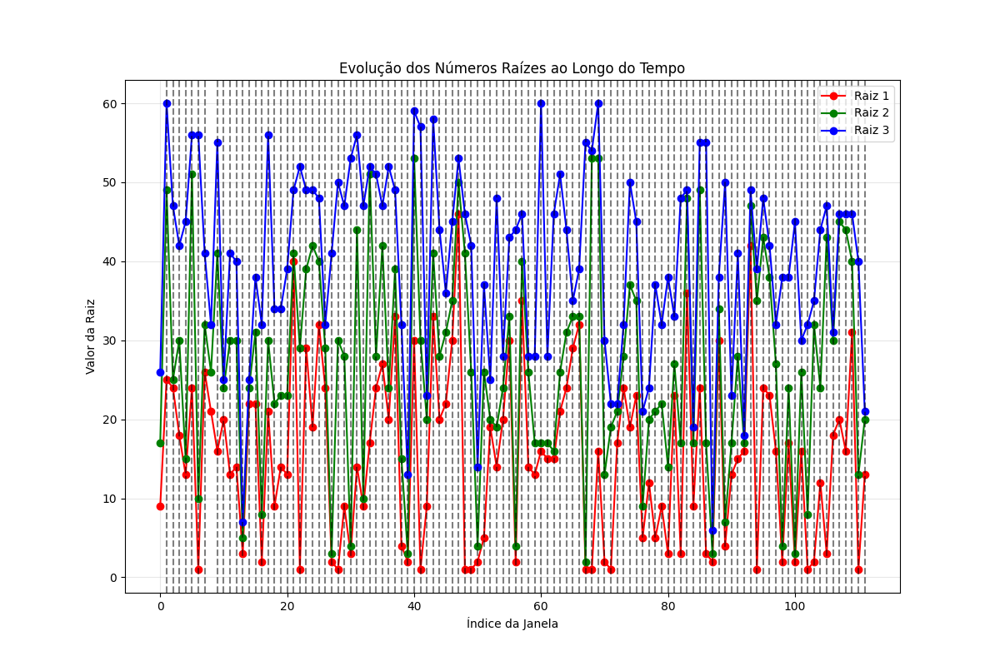
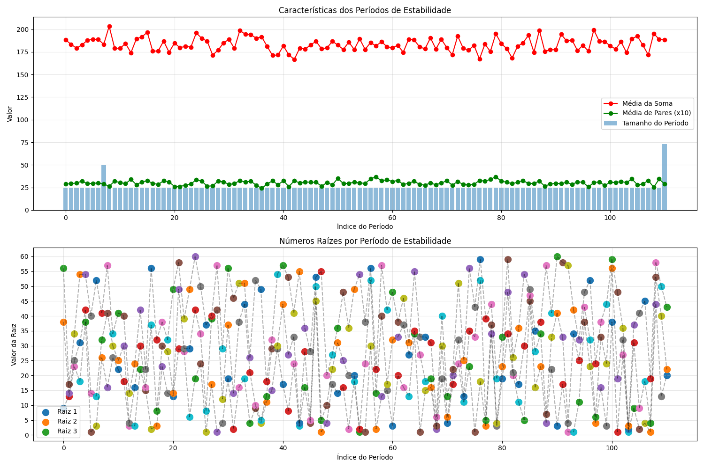

Data de geração: 04/04/2025 19:52:46
Total de sorteios analisados: 2848
Este relatório foi gerado com base na hipótese de que os números da Mega Sena são gerados artificialmente a partir de números raízes, que podem mudar ao longo do tempo. A análise combina:
Os números raízes mais recentes detectados são: 13, 20, 21
Foram identificados 110 pontos de mudança nos números raízes ao longo do histórico.
Foram identificados 111 períodos de estabilidade nos padrões da Mega Sena.
O período atual começou no sorteio 2775 e tem duração de 73 sorteios.
Com base nas análises realizadas, foram geradas as seguintes previsões para jogos futuros:
Números: 1213203445
Confiança: 0.67
Descrição: Combinação de números raízes com simulação quântica
Números: 132021325557
Confiança: 0.63
Descrição: Baseada nos números raízes mais recentes
Números: 135365456
Confiança: 0.61
Descrição: Baseada na distribuição de paridade do período atual
Números: 51033343753
Confiança: 0.58
Descrição: Baseada nos números mais frequentes historicamente
Números: 124314142
Confiança: 0.51
Descrição: Gerada por simulação de computação quântica
É fundamental ressaltar que, apesar da análise detalhada e das metodologias avançadas utilizadas, a Mega Sena continua sendo um jogo de sorte com probabilidades extremamente baixas de acerto (1 em 50.063.860 para a sena).
As estratégias apresentadas podem aumentar ligeiramente as chances, mas não garantem sucesso. Use estas previsões como uma referência adicional, não como garantia de resultados.